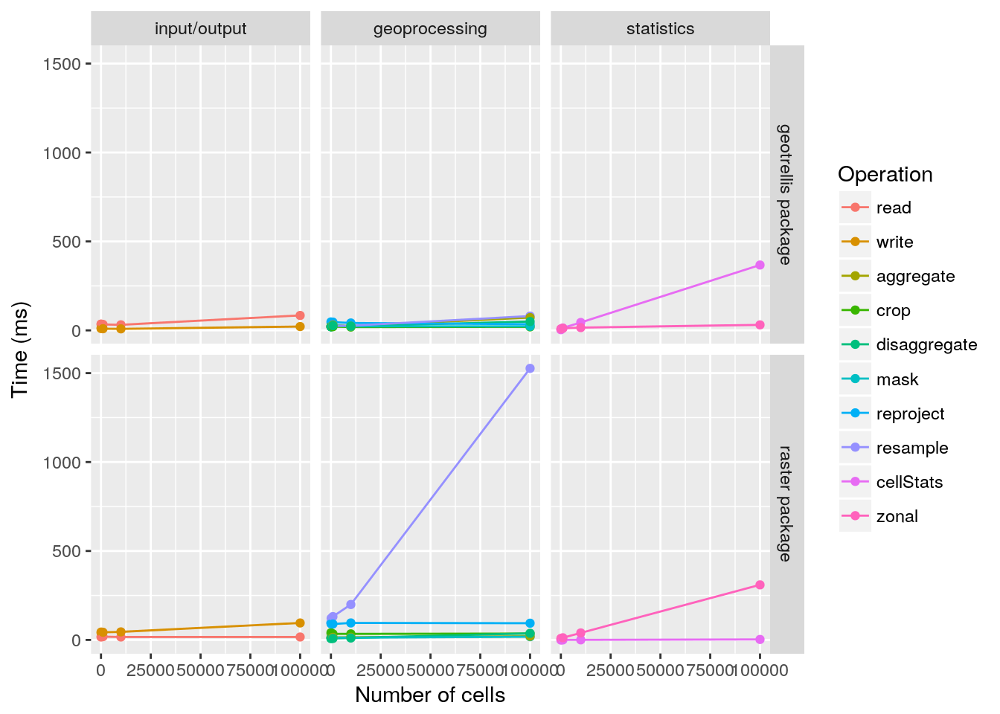

The geotrellis R package was an experiment to see if R could leverage the Scala data processing engine geotrellis to process spatial data faster than the raster R package. This vignette outlines the functions implmented in the geotrellis R package, and provides some benchmark results against the raster R package. This R package is experimental and not recomended for real analysis. Current benchmarks indicate that little to no benefits will be gained using this package.
Spatial data is stored in a gt_RasterLayer object. This R6 class contains all low-level the definitions for reading, writing, processing, and analyzing data. However, users should not interact with this class’ methods directly. Instead, users should use the S4 methods provided. The usage of these S4 methods is outlined below.
Spatial data is read using the gt_raster method. This method can load data using a character file path for a GeoTiff file. Additionally, users can coerce a raster::RasterLayer-class object. Note that the package only support single-band layer raster data.
# load in data using file path
g <- gt_raster(system.file('extdata/test.tif', package='geotrellis'))
# load in data using a RasterLayer object
g <- gt_raster(raster(system.file('extdata/test.tif', package='geotrellis')))Once data has been loaded into R, users can access the metadata associated with the data. The methods used to access the metadata follow the conventions used in the raster R package.
print(g) # print summary of object## class : gt_RasterLayer
## dimensions : 3, 3, 6 (nrow, ncol, ncell)
## resolution : 1, 4 (x, y)
## extent : 0, 3, 2, 10 (xmin, xmax, ymin, ymax)
## coord. ref. : +proj=longlat +datum=WGS84 +no_defs +ellps=WGS84 +towgs84=0,0,0
## data type : float64ud-1.7E308
## data source : Scala interpretercrs(g) # coordinate reference system## CRS arguments:
## +proj=longlat +datum=WGS84 +no_defs +ellps=WGS84 +towgs84=0,0,0extent(g) # spatial extent of data## class : Extent
## xmin : 0
## xmax : 3
## ymin : 2
## ymax : 10res(g) # resolution## [1] 1 4ncell(g) # number of data cells## [1] 6ncol(g) # number of columns## [1] 3nrow(g) # number of rows## [1] 2Users can also convert the data into native R objects and raster::RasterLayer-class objects.
values(g) # convert data as a numeric vector## [1] NA 0 0 0 0 0as.matrix(g) # convert data to a matrix## [,1] [,2] [,3]
## [1,] NA 0 0
## [2,] 0 0 0as.raster(g) # convert data to a RasterLayer## class : RasterLayer
## dimensions : 2, 3, 6 (nrow, ncol, ncell)
## resolution : 1, 4 (x, y)
## extent : 0, 3, 2, 10 (xmin, xmax, ymin, ymax)
## coord. ref. : +proj=longlat +datum=WGS84 +no_defs +ellps=WGS84 +towgs84=0,0,0
## data source : in memory
## names : layer
## values : 0, 0 (min, max)Finally, data can be saved to disk using the gt_writeRaster function.
# save data to disk in a GeoTiff format
gt_writeRaster(g, tempfile(fileext='.tif')) The geotrellis R package contains several geoprocessing methods.
gt_resample can be used:# create new layer with different spatial resolution
l <- gt_raster(raster::disaggregate(as.raster(g), 2, method=''))
# resample data to new resolution
gt_resample(g, l, method='ngb')## class : gt_RasterLayer
## dimensions : 6, 6, 24 (nrow, ncol, ncell)
## resolution : 0.5, 2 (x, y)
## extent : 0, 3, 2, 10 (xmin, xmax, ymin, ymax)
## coord. ref. : +proj=longlat +datum=WGS84 +no_defs +ellps=WGS84 +towgs84=0,0,0
## data type : float64ud-1.7E308
## data source : Scala interpretergt_projectRaster method can be used. In addition to an input gt_RasterLayer object, this method accepts either: (1) a sp::CRS coordinate refence system object and a numeric resolution or (2) a gt_RasterLayer with spatial properties that are used to reproject the data.gt_projectRaster(g, sp::CRS('+init=epsg:3395'), res=50000, method='ngb')## class : gt_RasterLayer
## dimensions : 7, 7, 126 (nrow, ncol, ncell)
## resolution : 50000, 50000 (x, y)
## extent : 0, 350000, 211475.102852, 1111475.102852 (xmin, xmax, ymin, ymax)
## coord. ref. : +proj=merc +lon_0=0 +k=1 +x_0=0 +y_0=0 +datum=WGS84 +units=m +no_defs +ellps=WGS84 +towgs84=0,0,0
## data type : float64ud-1.7E308
## data source : Scala interpretergt_RasterLayer object, the gt_crop method can be used. This method accepts either an raster::Extent-class object or a gt_RasterLayer object.gt_crop(g, extent(raster::extent(c(0, 3, 2, 6))))## class : gt_RasterLayer
## dimensions : 3, 3, 3 (nrow, ncol, ncell)
## resolution : 1, 4 (x, y)
## extent : 0, 3, 2, 6 (xmin, xmax, ymin, ymax)
## coord. ref. : +proj=longlat +datum=WGS84 +no_defs +ellps=WGS84 +towgs84=0,0,0
## data type : float64ud-1.7E308
## data source : Scala interpretergt_RasterLayer object to another value, the gt_mask method can be used. This defaults to updating cells in the argument to x to be NA where they are NA in the mask layer. The maskvalue and updatevalue arguments can used to modify this behavior though.# create mask layer
m <- as.raster(g)
m <- raster::setValues(m, sample(c(1,NA), ncell(m), replace=TRUE))
m <- gt_raster(m)
# run mask analysis
gt_mask(g, m)## class : gt_RasterLayer
## dimensions : 3, 3, 6 (nrow, ncol, ncell)
## resolution : 1, 4 (x, y)
## extent : 0, 3, 2, 10 (xmin, xmax, ymin, ymax)
## coord. ref. : +proj=longlat +datum=WGS84 +no_defs +ellps=WGS84 +towgs84=0,0,0
## data type : float64ud-1.7E308
## data source : Scala interpreterThis package offers two statistical methods for analyzing data in a gt_RasterLayer object. Note that there is currently a bug in the geotrellis code that causes medians to be calculated incorrectly. Additionally, note that unlike the functions in the raster R package, these functions calculate the population standard deviation, not the sample standard deviation.
The gt_cellStats method can be used to calculate statistics using all the cells in the raster data.
gt_cellStats(g)## mean median mode sd min max
## 0.56479571 0.46143892 0.99364547 0.35762296 0.09470918 0.99364547The the gt_zonal method can be used to calculate statistics in zones, as specified in a second raster.
# make layer with zones
z <- as.raster(g)
z <- raster::setValues(z, sample(1:2, ncell(z), replace=TRUE))
z <- gt_raster(z)
# run zonal statistics
gt_zonal(g, z)## zone mean median mode sd
## 1 1 -429496730 -1342177280 0 858993459
## 2 2 0 0 0 0Finally, the geotrellis R package provides a benchmark function to automate the benchmarking of all these functions and compare them to their counterparts in the raster package.
# run benchmark
b <- benchmark(ncell=c(1e+1, 1e+2, 1e+3, 1e+4, 1e+5), times=10L)
# print benchmark
print(b)## class: gt_Benchmark object
## ncell: 10, 100, 1000, 10000, 1e+05
## tests: input/output, geoprocessing, statistics# plot benchmark
plot(b)